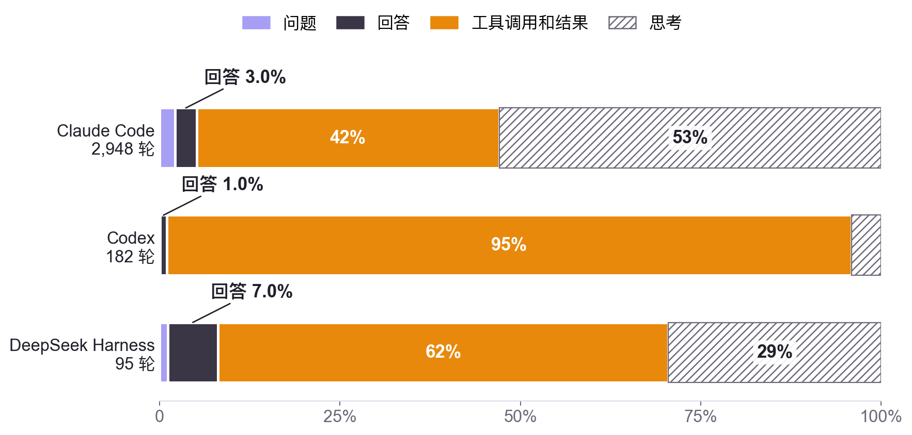
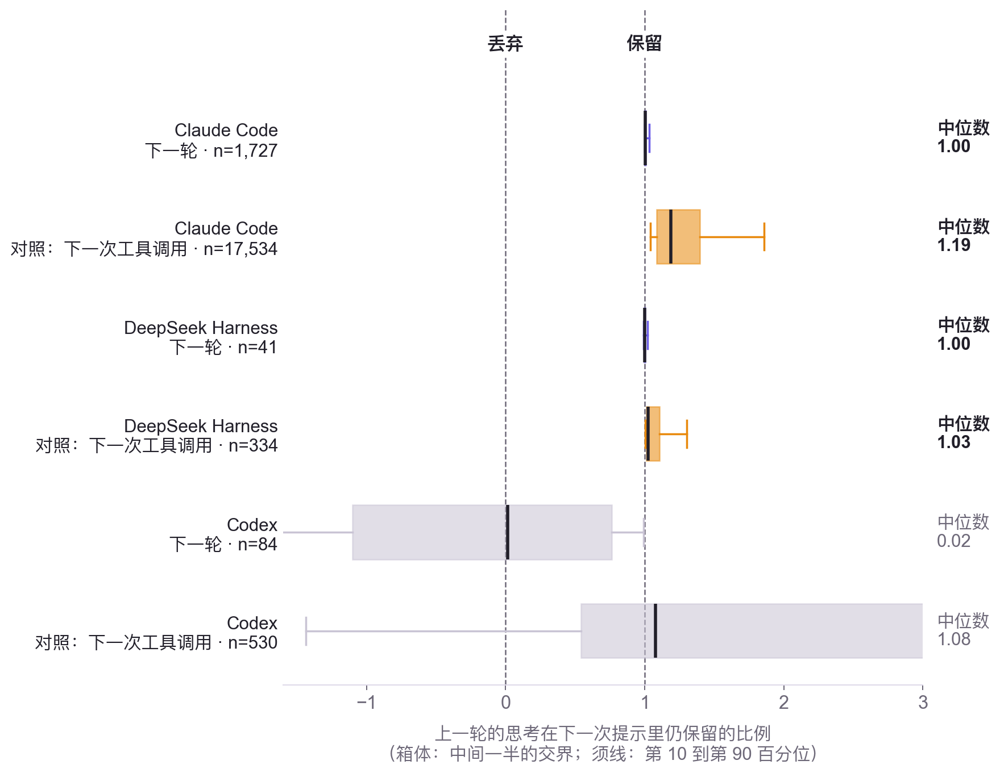
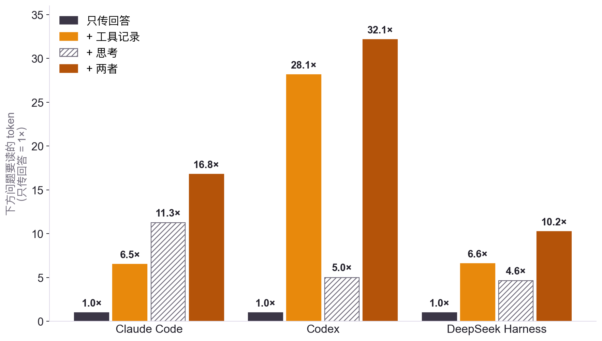

Agent 一轮的 token 去了哪里
思考和工具往来远多于人读到的回答，而且现在的运行时把两者都留在上下文里。这对画布该往下传什么意味着什么。
问题
ThoughtDAG 把 Agent 会话导入画布：每一轮是一个节点，带着问题、回答和工具步骤。在一个节点下面提问时，模型读到的是画布沿着上方连线编译出来的内容。所以每一轮 Agent 对话都要定两件事：哪些内容往下传给后面的问题，其余部分在卡片上怎么呈现。
一轮有四个部分：问题、回答、工具调用及其结果、思考。这篇笔记测量真实会话里每部分有多大，以及 Agent 运行时自己会不会把一轮的思考留在后续轮次的上下文里。它回答三个问题：
- 一轮 Agent 对话由什么组成？
- 运行时会把一轮的思考带进下一次提示吗？
- 按不同的交接规则，在一轮下面提问时要读多少内容？
要点
- 回答只是一轮里很小的一部分。它占 Claude Code 一轮 token 的 3.0%，Codex 的 1.0%，DeepSeek Harness 的 7.0%。工具调用及其结果分别占 42%、95% 和 62%，思考分别占 53%、4% 和 29%。各部分的比例取决于每个运行时被拿来做什么（这里的 Codex 会话多是操作电脑的事务性工作），换一个人会很不一样；但三个运行时里，回答都只占一轮的几个百分点。
- 对这些日志里的模型来说，思考留在 Agent 自己的上下文里。Claude Code 的 1,727 个轮次交界里有 90%，DeepSeek Harness 的 41 个交界全部，下一轮的提示都按上一轮的全部输出增长，思考也包括在内。这与各服务商的文档一致。「思考不会进入后续轮次」这个说法，对部分旧模型和部分请求形态成立，对这些模型不成立。
- Claude Code 的日志只记了约五分之一的思考。日志里存的是摘要。按计费输出算，思考有 3,900 万 token，而摘要文字只有 870 万 token，所以按文字计数会少算约 4.5 倍。
- 十分之一的轮次占了大部分工具往来。最重的十分之一轮次，占了已存工具记录的 53%（Claude Code）、62%（Codex）和 80%（DeepSeek Harness）。这样的分布适合每一轮一个开关，而不是整张画布一条规则。
数据与方法
语料。作者本机上，2026 年 10 月 27 日之前 30 天内修改过的全部会话文件，来自四个 Agent 运行时。工作内容是这个项目和其他项目的软件开发，以及研究写作。各运行时被拿来做的事不一样：Codex 会话大多是动手操作电脑的事务性工作，比如操作应用、运行命令来完成一件事，所以它每一轮里工具往来特别多。这是一个人的使用数据，各部分的比例会随使用方式有很大差别。离开本机的只有汇总数字；公开的逐轮数据只有 token 计数。
| 运行时 | 会话文件 | 轮数 | 有工具调用的轮数 | 工具步骤中位数 | 模型调用 | 模型（占调用比例） |
|---|---|---|---|---|---|---|
| Claude Code | 69 | 2,948 | 2,205 | 9 | 38,476 | claude-opus-5-5 89%，Fable 5.1 与 5、Opus 5 等 |
| Codex | 76 | 182 | 157 | 18 | 8,903 | gpt-6-astra 93%，gpt-5.6-sol、gpt-6.1-sol |
| DeepSeek Harness | 36 | 95 | 59 | 5 | 1,330 | deepseek-flash、deepseek-v4-flash |
| Pi | 7 | 12 | 6 | 6 | 57 | deepseek-v4-flash |
轮次。每个文件都经过 ThoughtDAG 自己用的导入器，所以这里的一轮正好是画布上的一个节点：人输入的一条消息，加上 Agent 在下一条消息之前做的所有事。Codex 的子线程不计入轮数，因为父轮次已经包含了它们的结果。Pi 的轮数太少，说明不了什么；它出现在表里，不出现在图里。
一轮的各部分。问题和回答按卡片上显示的计。工具调用和结果按原始大小计：导入器为画布把每条结果截到 4,000 字符，截断标记里记录了原始长度。思考的计法见下文。
计数。日志里有服务商自己的计数时，思考一律用这个计数。Codex 记录推理 token 的累计总数（思考本身是加密的）。Pi 每条消息记录一个推理计数。Claude Code 的日志只存思考的摘要，所以一条消息的思考等于计费输出减去它可见的输出。DeepSeek 返回完整的推理文字，所以 DeepSeek Harness 的思考按文字计数。文字计数用画布自己的估算方法：一个中日韩字符算一个 token，其他文字四个字符算一个 token。每个运行时里，导入器得到的思考总数与逐次调用计数之和相差都在 0.2% 以内。
一轮由什么组成
| 占一轮 token 的比例 | 问题 | 回答 | 工具调用和结果 | 思考 |
|---|---|---|---|---|
| Claude Code | 2.1% | 3.0% | 41.9% | 52.9% |
| Codex | 0.1% | 1.0% | 94.9% | 4.1% |
| DeepSeek Harness | 1.1% | 7.0% | 62.4% | 29.5% |
| Pi（12 轮） | 26.2% | 5.6% | 53.0% | 15.2% |

以每一轮自己的回答为基准，一个典型轮次是这样的（中位数，括号里是第 90 百分位）：
| 每一轮 | 工具调用和结果 ÷ 回答 | 思考 ÷ 回答 |
|---|---|---|
| Claude Code | 9.2×（38×） | 9.3×（48×） |
| Codex | 70×（197×） | 3.6×（10.5×） |
| DeepSeek Harness | 4.4×（45×） | 3.0×（22×） |
各运行时的构成不同。这里的 Codex 轮次是很长的工具循环（工具步骤中位数为 18），命令输出很大，思考占其输出 token 的 27%。Claude Code 思考得最多：输出 token 里 70% 是思考。DeepSeek Harness 居中，为 48%。
这是一个人的使用数据。各部分的比例更多反映了这份样本里每个运行时被拿来做什么，而不是运行时本身。Codex 会话大多是操作电脑的事务性工作，比如操作应用、运行命令来完成任务，所以工具调用和结果占了它每一轮的 95%。用法不同的人，看到的比例也会不同，差别可能很大。三个运行时里都成立的是：最后呈现给人的回答，只占一轮 token 的少数，在 1.0% 到 7.0% 之间。
运行时会保留思考吗？
常见的回答是不会：模型思考、回答，下一轮从头开始，不带思考。各服务商的文档（2026 年 10 月 27 日查阅）说，这取决于模型和请求方式：
- Anthropic。Claude Opus 4.5 及之后的 Opus 模型、Sonnet 4.6 及之后、Haiku 5.5，以及 Fable 和 Mythos 系列，会把之前所有轮次的思考块留在上下文里，并按输入计费。更早的模型只保留最后一轮的思考。（Thinking ↗）
- DeepSeek。思考模式下，声明了工具的请求必须把之前所有轮次的推理内容传回，这些内容会拼进上下文。不带工具时会被忽略。（Thinking mode ↗）
- OpenAI。GPT-5.6 之前的模型默认不会把更早轮次的推理带进下一次采样；GPT-5.6 系列会。（Reasoning ↗）
在同一轮里的工具调用之间，三家都会保留思考。Agent 框架总会声明工具，所以适用于 DeepSeek Harness 的是 DeepSeek 的第一条规则。
用服务商自己的计数来测
每次模型调用都会记录发出的提示有多大（输入加上缓存读取和写入）。跨过一个轮次交界，下一次提示增长的量，等于运行时从上一轮保留下来的内容加上新消息。如果思考被保留，增长量等于上一次调用的全部输出加上新消息。如果思考被丢弃，增长量是可见输出加上新消息，再减去这一轮在工具调用之间一直带着的全部思考。我们把每个交界落在这两种情况之间的位置，报告为上一轮思考仍在的比例：1 表示保留，0 表示丢弃。有压缩、换模型、带图片，或思考少于 1,000 token 的交界不计入。
在一轮之内的工具调用之间，三家 API 都会保留思考，同样的测量（减去工具结果之后）可以当作对照。它应该读出 1，运行时额外加了别的内容时会略高于 1。
| 运行时 | 下一轮：n · 中位数（四分位距） | 对照，下一次工具调用：n · 中位数（四分位距） | 解读 |
|---|---|---|---|
| Claude Code | 1,727 · 1.00（1.00 到 1.01） | 17,534 · 1.18（1.08 到 1.39） | 保留 |
| DeepSeek Harness | 41 · 1.00（1.00 到 1.00） | 334 · 1.03（1.01 到 1.11） | 保留 |
| Codex | 84 · 0.02（−1.08 到 0.76） | 530 · 1.08（0.54 到 3.09） | 这个方法读不出 |
| Pi | 1 | 8 | 太少 |

Claude Code 的大多数交界落在保留读数的 0.9 到 1.1 之内（1,727 个里有 1,548 个，90%）；78 个（4.5%）低于 0.5。如果运行时在交界处同时清掉了旧内容，比如过时的工具结果，提示会变小，比例就会被拉低，这种算法无法区分这两种情况。DeepSeek Harness 的 41 个交界全部落在 0.95 到 1.06 之间。
Codex 的日志支持不了任何解读。可能有两个原因：一个辅助审查模型的用量和主模型记在同一条记录流里；运行时在发送前裁掉的历史，在日志里看不到。这里关于它的证据只有它的文档。
所以，在这份样本的 Claude Code 和 DeepSeek Harness 会话里，每一次后续提示都带着之前每一轮的思考，直到运行时压缩历史为止。思考要付两次钱：生成时按输出付一次，之后每次重新读它的调用里再按输入付一次，其中很多按缓存读取的价格计。
画布该往下传什么
画布的交接和运行时的交接是两件事。在画布上一轮的下面提问时，模型读到的是画布沿连线编译的内容，不是运行时的提示。我们按在一轮下面提问时要从这一轮读多少 token 来比较几种交接规则，以只传问题和回答为基准：
| 汇总（括号里为每轮中位数） | + 工具记录 | + 思考 | + 两者 |
|---|---|---|---|
| Claude Code | 6.5×（5.3×） | 11.3×（8.9×） | 16.8× |
| Codex | 28.1×（16.7×） | 5.0×（4.0×） | 32.1× |
| DeepSeek Harness | 6.6×（2.1×） | 4.6×（3.2×） | 10.2× |

ThoughtDAG 现在这样处理一轮 Agent 对话：
- 回答总是往下传。
- 工具记录导入时默认关闭，每一轮有自己的开关。关闭时，下方的问题只读到一行，列出这一轮动过的文件，需要时可以去要这些文件的当前内容。因为十分之一的轮次占了大部分分量，开关放在每一轮上，而不是整张画布上。
- 思考从不往下传。它作为一个数字留在卡片上。卡片的小条里，往下传的部分画成实心，留在本卡的部分画成斜纹。
这篇笔记测的是大小，不是效果。下方的问题在上下文里带上工具记录或思考之后，回答会不会更好，这里没有测试。
这篇笔记不能说明什么
日志来自作者本人一个月的使用：一个方便样本，工作内容的组合决定了这些数字。比如 Codex 会话大多是带长工具循环的操作电脑任务。按文字得到的计数是估算，没有用各服务商的分词器；Claude Code 的思考计数依赖于对每条消息可见部分的准确估算。保留测试读的是服务商用量数字所显示的提示内容，不是模型实际关注了什么。它对 Codex 读不出结论，Pi 的轮数太少。token 占比不等于成本占比：缓存读取只按输入价格的一小部分计费。
它能说明的结论更窄：在这些 Agent 会话里，回答只是每一轮的一小部分，工具往来和思考占了大部分，而在 Claude Code 和 DeepSeek Harness 上，思考留在运行时的上下文里，进入了后续轮次。
复现与查看
脚本在存有日志的机器上运行，只输出汇总数字。